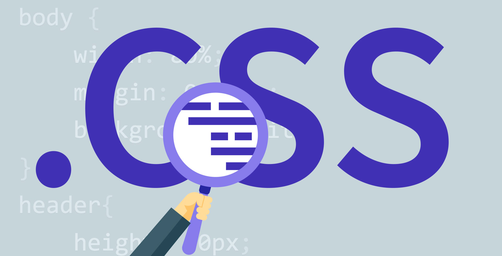

CSS
.......
Principales Características De CSS, El modo de fucionamiento de las CSS consiste en definir, mediante una sintaxis especial, la forma de presentación que le aplicaremos a:
* Un documento HTML o página, se puede definir la forma, en un pequeño trozo de código en la cabecera, a toda la página.
* Una porción del documento, aplicando estilos visibles en un trozo de la página.
* Una etiqueta en concreto, llegando incluso a poder definir varios estilos diferentes para una sola etiqueta. Esto es muy importante ya que ofrece potencia en nuestra programación. Podemos definir, por ejemplo, varios tipos de párrafos: en rojo, en azul, con margenes, sin ellos...
La potencia de la tecnología salta a la vista. Pero no solo se queda aquí, ya que además esta sintaxis CSS permite aplicar al documento formato de modo mucho más exacto. Si antes el HTML se nos quedaba corto para maquetar las páginas y teníamos que utilizar trucos para conseguir nuestros efectos, ahora tenemos muchas más herramientas que nos permiten definir esta forma:
* Podemos definir la distancia entre líneas del documento.
* Se puede aplicar identado a las primeras líneas del párrafo.
* Podemos colocar elementos en la página con mayor precisión, y sin lugar a errores.
* Y mucho más, como definr la visivilidad de los elementos, margenes, subrallados, tachados...
Y seguimos mostrandoos ventajas, ya que si con el HTML tan sólo podíamos definir atributos en las páginas con pixeles y porcentajes, ahora podemos definir utilizando muchas más unidades como:
* Pixels (px) y porcentaje (%), como antes.
* Pulgadas (in).
* Puntos (pt).
* Centímetros (cm).